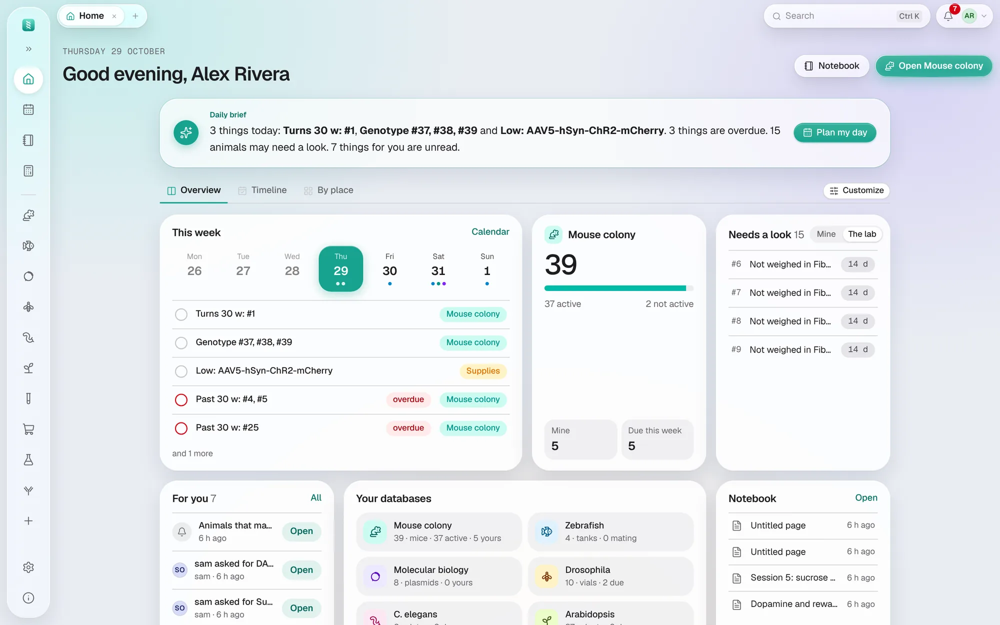

Get started
Home
The page that opens each morning: what needs doing today, in three views.
Home is where each day starts: only what needs attention, from every database you can see. Three tabs under the greeting show it three ways (or choose in Settings → Appearance & language → Home view); the choice is yours alone.
- Overview
- Cards, built from the databases your lab keeps and laid out in the sidebar's order: For you, then Counts, a number for each database (mice, tanks, plasmids, vials or plates, open orders, items running low), and each database's own cards. The mouse colony brings Animals that may need a look (below), Mice older than 30 weeks, Upcoming weanings and the Genotyping queue; zebrafish the mating tanks to return; Molecular biology Recent plasmids (yours first, marked No sequence until one is added); and each fly, worm or other animal database a card of its own with what is due in the next two days, so Drosophila and C. elegans are never mixed. Expiring & low stock, the Next 14 days and Recent orders complete it. The button at the top opens the first database in the sidebar.
- Timeline
- Every dated job on one row of days, a row per kind of work, coloured overdue, today, within 3 days or scheduled. Choose 1, 2 or 4 weeks beside the tabs. Needs you now and Busy days sit beside it. On a phone it becomes a list of days.
- By place
- Your racks and incubators seen from above, a ring where something is due, with Where to go: the next three days' jobs, numbered in walking order, to take into the room. A cage's colour shows its owner. A ! on a cage means two or more cages with living mice are recorded in that position; it shows the latest, and its tooltip names them all.
On Timeline and By place, For you is one line at the top: your latest notice and how many are unread.
Customize, beside the tabs on Overview, arranges it your way: tick the cards you want, drag them (or use the arrows; the double arrow sends a card to the top) into your order, and make any of them wide. Five cards start switched off and are there to add: Your databases (a button for each, as in the sidebar), Your to-dos (due this week or undated), Bookings (instruments booked in the next week), Recent pages of your notebook, and Calculators (the ones you opened last, then the usual ones). Under the cards, Counts lists a number for every database: the first five show until you tick the ones you want. Back to the usual puts everything back, after asking. Like the view, it is yours alone.
On every view:
- For you
- Your unread notifications.
- Getting started
- While you're new, your first steps, each ticked off when it's done. An admin's list sets the lab up — add a rack, bring in your mice, print cage cards, set up your fly database, invite the lab. A member's is their own — find your mice, scan a cage card, request an order, add a plasmid, read this guide. Hide this list puts it away.
- Upcoming weanings
- The same list the calendar shows; each row opens its cage.
Animals that may need a look
The first card of the mouse colony (or of zebrafish, in a lab without mice) lists the animals whose records suggest someone should look at them. It says what the records show, with the numbers, and never a diagnosis: what to do is yours and your protocol's to decide. Each row opens the animal (or its experiment, or its tank).
- Losing weight
- A living mouse whose latest weight is 15% or more below its heaviest of the last 30 days (with two weights or more in them), or below its first weight in an experiment that has started: both weights and their days, and the loss. An admin sets the percentage in Settings → General → Weight loss to flag.
- Notes that may need a look
- A mouse, tank or fish whose notes changed in the last 14 days (the change history says when), or a weight taken in that time with a note, that uses one of these words, in any case: hunched, hunching, lethargic, lethargy, moribund, not eating, off food, dehydrated, dehydration, wound, wounds, wounded, ulcer, ulcers, ulcerated, ulceration, weight loss, losing weight, thin, emaciated, labored (laboured) breathing, piloerection, hypothermic, prolapse; 弓背, 消瘦, 精神差, 精神萎靡, 萎靡, 不进食, 拒食, 脱水, 伤口, 溃疡, 呼吸困难, 体重下降, 体重减轻, 濒死, 竖毛, 低体温, 脱垂. The line it is in is shown. A word just after no, not or without (无, 没有, 未, 未见) isn't counted, so no wound and 未见溃疡 stay off. It is a word in a note, not a finding.
- Not weighed in their experiment
- An animal in an active experiment measuring body weight, not weighed for longer than its regimen's weighing days allow, or 7 days when it plans none (Experiments).
- Status and experiment disagree
- A mouse whose status is experiment while it is in no experiment (once the lab keeps its mouse experiments here), or something else, such as geno, while it is in an active one.
A member sees their own animals and the mice of their experiments; Show the lab’s shows everyone's. Animal care, facility managers and admins see the lab's, and Show only yours narrows it. Each morning the bell also says how many animals may need a look (not the status ones); turn that off in Settings → Notifications → Animals that may need a look. Like any card, Customize can put it away.
